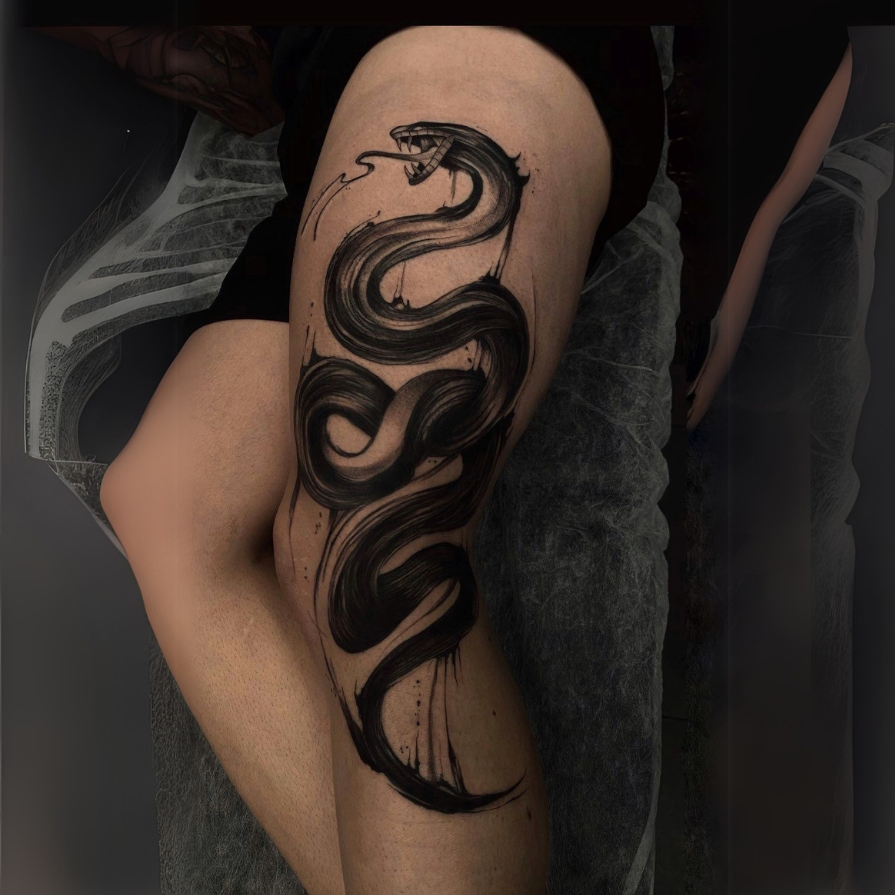
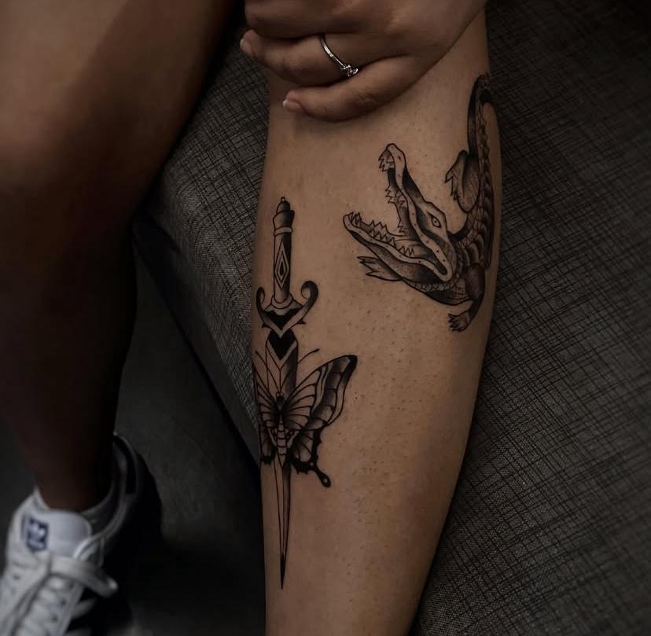
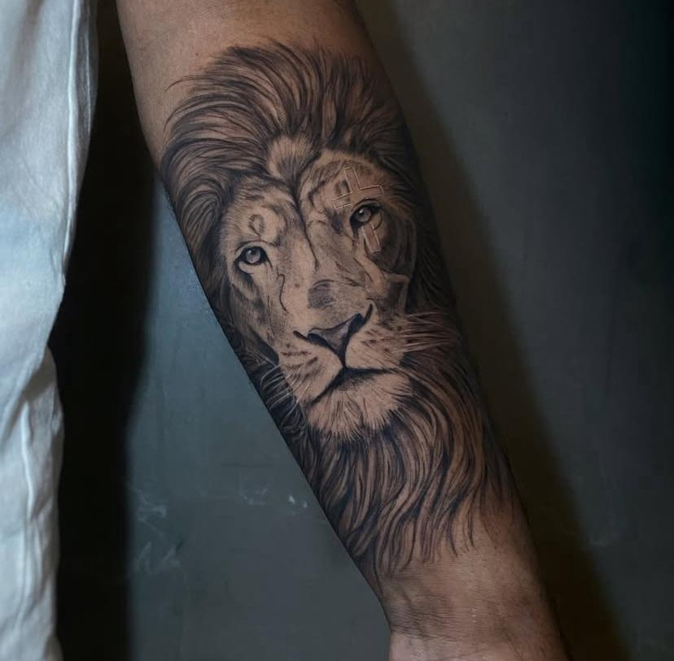
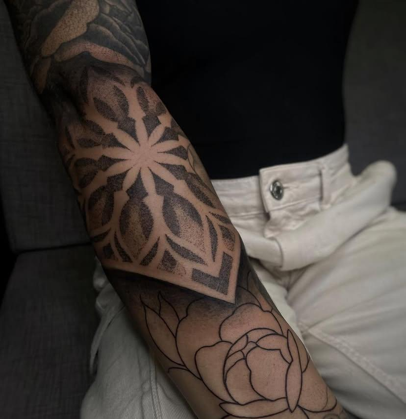

Delakaytattoo

Oi, eu sou a Catarine, mais conhecida como Kayt. Sou tatuadora há 10 anos, especializada em blackwork e fine line. Sempre gostei muito de desenhar, e hoje tenho o prazer de trabalhar com o que amo.



